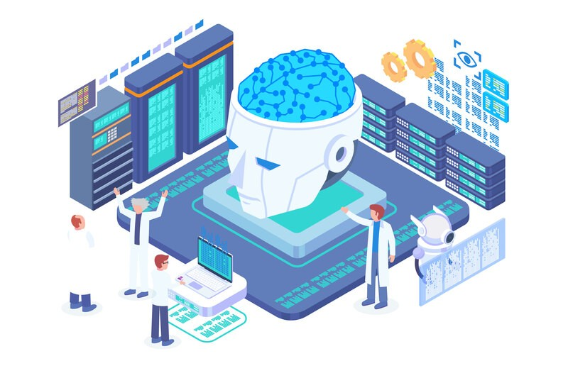
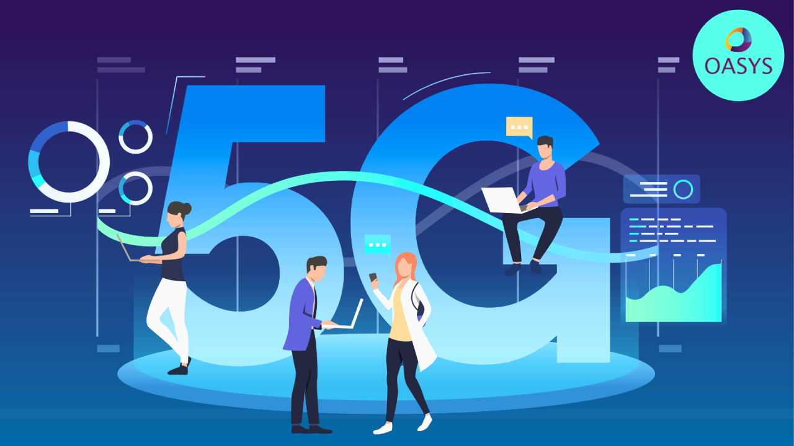
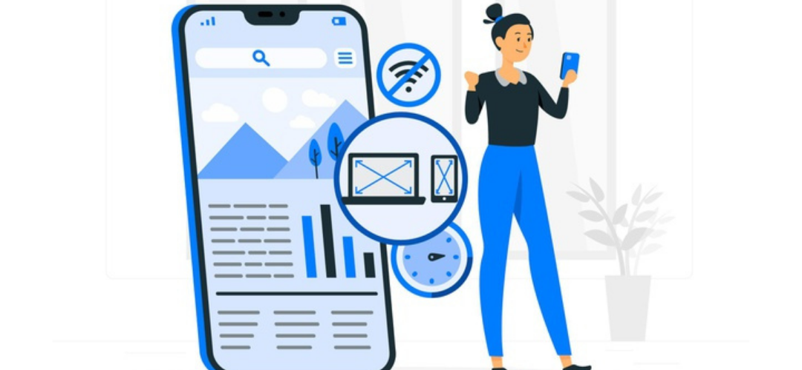
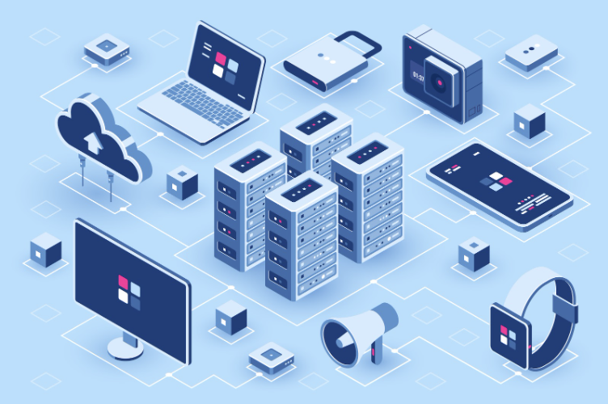

Artificial Intelligence (AI) and Machine Learning (ML)

Artificial Intelligence (AI) and Machine Learning (ML) is by no means a new technology in app development. But as AI and ML become more sophisticated, so will app capabilities.
AI delivers a human-like problem-solving experience by leveraging data. These technologies allow apps to analyse and learn from user behaviour, then make intelligent predictions or recommendations on their own based on that data to suit users' behavioural patterns and preferences.
Looking ahead, we can expect AI to further improve app experiences through:
- Enhanced Security Measure:
AI can further enhance safety features through biometric markers like advanced facial and speech recognition. AI and ML can also improve user safety and data security, and help spot fraud. Advanced algorithms are used to detect fraudulent activities, ensuring safer financial interactions. - Emotion and Intention-based Commands:
Voice assistants could interpret not just words but the user’s emotional state or intent, leading to more nuanced interactions. - Deeper Behavioural Insights:
Enhanced algorithms will offer even more precise predictions of user behaviour, enabling hyper-personalized app experiences.
By integrating these advancements, apps will become more adaptive and responsive to user needs, setting new standards for interactivity and personalization.
5G Technology

Speed is the focus of 5G. 5G is capable of operating at 100x the speed of most existing networks. Due to its high speed, information is transferred in milliseconds, which reduces latency from trillions to billions and provides a better user experience. 5G technology will open the door for the implementation of more sophisticated and data hungry applications. The introduction of 5G networks will guarantee the unmatched speed, bandwidth, and connectivity of apps.
- Ultra-fast speeds:
This means you can have real-time conversations through video calls without any annoying delays. 5G's high data transmission speed and capacity can also enhance the performance of data-heavy apps, like those used for streaming 4K videos or AR/VR. Users will enjoy almost instant app responses and smooth streaming of videos and other media. - Low delay:
This is crucial for apps that need immediate responses, like online gaming or virtual reality (VR) experiences. Apps that rely on real-time data, such as autonomous vehicles, remote surgery, or live gaming, can benefit from 5G’s minimal latency. - Better connection:
With 5G, many more devices can stay connected at the same time, which opens up possibilities for more advanced Internet of Things (IoT) networks and app developments.
As 5G networks become more widespread, they will significantly influence the future of applications. All applications relying on high bandwidth and low latency will become easier on the user.
Augmented Reality (AR) and Virtual Reality (VR)
Augmented Reality (AR) and Virtual Reality (VR) technologies are introducing new dimensions to app experiences. AR technology imposes artificial images and objects on real-life objects. AR apps overlay digital information or graphics onto the real world, enhancing user interaction with their physical environment. On the other hand, VR creates an artificial environment. VR apps create immersive, simulated environments, often used in gaming or virtual tours. In the future, applications will explore AR and VR technologies in the user interface for more interactivity and interconnection.
The potential applications of AR and VR are vast, revolutionizing how we interact with digital content across numerous fields.
AR and VR are no longer just for gamers. AR and VR expansion is pushing the boundaries of app experiences beyond gaming into various sectors including:
- Entertainment:
AR and VR can make entertainment more engaging and fun. A great example is the Meta’s Oculus Quest 2. It allows users to work out, explore new countries, and watch concerts created in an immersive world—all from their living room. - Social Networks:
Imagine interacting with friends in a virtual space, attending virtual meetups, or exploring AR-enhanced profiles that bring social networking to life. - Interior Design:
Apps like Houzz and IKEA Place allow users to visualize furniture and decoration in their homes through augmented reality, making interior design more accessible and fun.
- Education:
AR/VR in education is transforming learning experiences, making them more fun and engaging. For example, students can take 3D historical journeys or access virtual science labs, making abstract concepts more tangible. - Retail:
The retail industry benefits from AR by providing customers with virtual fitting rooms with virtual clothing try-on features. This allows customers to see how clothes look on them without physically trying them on. Interactive product demos are also implemented, enhancing the online shopping experience, increasing engagement and reducing return rates. - Travel:
Virtual tourism experiences enable users to explore destinations from their homes, offering immersive previews before booking actual trips.
Apple’s Vision Pro and Meta’s Ray-Ban smart glasses are two strong indicators the future of mobile apps will involve AR/VR. As smartphone hardware improves and AR/VR technologies become more accessible, we expect to see a surge in innovative applications that blend the boundaries between our digital and physical worlds, creating engaging and immersive experiences.
Internet of Things (IoT)
The Internet of Things (IoT) refers to the network of interconnected devices such as smart homes, wearables, and connected vehicles. IoT-enabled applications serve as an interface for users to control and monitor these IoT devices. These applications would act as control centers for these devices. As the IoT devices grow, mobile applications will play a critical role in controlling this technology, driving convenience, optimization, customization, efficiency, and innovation across various sectors. The increase in the number of IoT devices is creating new ways for mobile apps to be developed further for smart homes, connected vehicles, wearable devices, and industrial applications in a way that has not been done before.
- Healthcare:
Remote patient monitoring through IoT devices that track health metrics such as heart rate, blood pressure, and glucose levels. - Fintech:
Fraud detection via predictive analytics that analyses transaction data for unusual patterns. - Logistics:
Tracking delivery vehicles in real-time to optimize routes and reduce fuel consumption.
- Smart Homes:
Managing energy usage by monitoring connected devices such as thermostats and lights. - Industrial:
Industrial IoT apps enable remote monitoring and management of manufacturing processes.
Progressive Web Apps (PWA)

Progressive Web Apps (PWA) combine the best of web and mobile applications. PWAs are web applications that behave like normal websites with the feel of native applications within the system. Apps like this allow users to enjoy the benefits of web apps and native apps simultaneously and deliver an experience on the same level as these apps. The content is displayed correctly on different devices irrespective of their screen sizes and they offer advanced features like push notifications, hardware access, offline functionality, rapid site loading and so on.
- Easier Development and Management:
Usage of PWAs will be more widespread in the future as they are inexpensive to build and manage compared to native apps, which makes them suitable for business entities that want to extend their market/customer reach without the challenge of creating and updating distinct native apps for each platform. - Work on Any Platform:
PWAs are built with web application development technologies that allow them to work on any device or platform with a browser.
Blockchain Technology
Blockchain technology is important for transparency and security enhancement in app development. By leveraging blockchain technology's decentralized and secure nature, developers can create apps that can ensure data integrity and build trust among users with enhanced transparency, security, and efficiency. Blockchain technology is now featured as a critical element of app development, particularly in businesses that require robust protection of information and high transparency and security such as finance, health, and supply chain sectors.
- Enhanced Security:
Blockchain’s decentralized nature makes it extremely difficult for hackers to alter or manipulate data. - Transparency:
Every transaction is recorded on a public ledger, providing an immutable record that can be audited at any time. - Efficiency:
Smart contracts can automate and streamline financial operations, reducing the need for intermediaries.
- Traceability:
Blockchain enables end-to-end visibility of goods as they move through the supply chain, ensuring authenticity. - Fraud Prevention:
The transparent and immutable ledger helps prevent counterfeiting and fraud. - Speed:
Automating processes through smart contracts can reduce delays and increase operational efficiency.
As the understanding of blockchain evolves beyond cryptocurrencies, its integration into apps is poised to become one of the major app development trends of the next few years, promising transformative impacts across various industries by ensuring robust security measures and unparalleled transparency.
Cross-Platform App Development
Cross-platform app development is a strategy that allows developers to create applications that can run on multiple operating systems using a single codebase. This approach contrasts with native app development, where separate codebases are required for each platform, for example, iOS and Android. Cross-platform development aims to streamline the development process, reduce costs, and ensure a consistent user experience across different devices.
- Reduced Development Time and Costs:
By using a single codebase for multiple platforms, developers can cut down on the time and cost of building and maintaining apps. - Unified User Experience:
Cross-platform frameworks often offer tools and components that help maintain a consistent user experience across different devices and operating systems.
- Faster Updates and Iterations:
With a single codebase, updating and iterating on features becomes faster and more manageable. Developers can push changes across all platforms simultaneously, ensuring that all users receive updates at the same time. - Wider Reach:
Developing apps for multiple platforms allows businesses to reach a broader audience. Rather than focusing on a single operating system, developers can target both iOS and Android users with the same application.
Cross-platform app development is likely to continue influencing the future of app development by promoting efficiency and expanding reach.
Cloud-Driven Apps
Cloud-driven apps are changing the way we use technology by providing easy access to our data from anywhere and at any time. These apps store information on remote servers (known as the cloud) instead of the device itself, which means you can retrieve your files, photos, and other content using any device with an internet connection. Developers can take advantage of the cloud services to do most of the labour intensive computation which will mean that the performance of the application itself is not significantly hampered by excessive load.
- Data Accessibility Across Devices:
Whether you’re using a smartphone, tablet, or computer, cloud-driven apps make it simple to access your files and information from anywhere across multiple devices, ensuring data consistency. You don’t have to worry about transferring data manually or being tied to a specific device. - Scalability:
Cloud infrastructure allows mobile apps to adjust their capacity easier as needed according to user demand. This means that during busy periods, such as holidays or sales events, the app can handle a large number of users without slowing down or crashing.
- Better App Performance:
Cloud-driven apps enhances performance by offloading heavy computing tasks to powerful cloud servers. - Collaborative Experience:
The cloud facilitates collaboration for apps requiring multiple users to work on shared data.
With advancements in cloud technology, cloud-driven apps are set to dominate the future of mobile technology.
Edge Computing

Edge computing refers to the decentralization of data processing, moving it closer to the source of data. Edge computing can significantly enhance performance and functionality. Instead of sending data to distant servers, edge computing brings the processing power closer to the source, whether it’s on the device itself or nearby servers. This enables mobile apps to perform tasks and analyse data instantly, without any delay. Apps that require real-time processing and low latency can benefit significantly from edge computing. By processing data locally on the device or nearby edge servers, these apps can respond faster and function reliably, even with intermittent connectivity. In addition, edge computing can enhance privacy and security by keeping sensitive data on the device.
- Real-Time Processing:
Data is processed locally on the device or nearby edge servers, reducing latency and ensuring swift responses. - Enhanced Privacy/Security:
With data processing occurring closer to the user, sensitive information doesn’t need to travel long distances to centralized cloud servers. This minimizes exposure to potential breaches and enhances data security.
- Reduced Bandwidth Usage:
By processing data locally, less information needs to be transmitted over networks, leading to reduced bandwidth consumption and cost savings. - Reliability:
Even with intermittent internet connectivity, edge computing ensures that critical functionalities of mobile apps remain operational.
The integration of edge computing into mobile app development not only improves performance but also addresses important privacy and security issues. This technology empowers developers to create more responsive, reliable, and secure applications for the modern world. As the demand for real-time, high-performing apps grows, edge computing will play an increasingly vital role.
Quantum Computing

Quantum computing, a cutting-edge technology based on the principles of quantum physics, offers computing capabilities far exceeding current systems. Its advanced computing abilities allow mobile applications to handle complicated calculations incredibly quickly, pushing the limits of what can be done with real-time data processing. For instance, quantum encryption could significantly enhance app security by making data virtually unhackable. Quantum algorithms could also improve AI in mobile apps, leading to more efficient machine-learning processes and better personalization. Quantum computing’s potential for simultaneous processing could expedite complex computations, enhancing performance for data-intensive apps.
- Enhanced Performance:
Quantum computers can solve problems that are currently impossible for regular computers. This means faster algorithms for tasks like optimization, machine learning, and encryption. - Quantum Encryption:
Security is a big concern for mobile apps. Quantum encryption methods offer a higher level of security by using the principles of quantum mechanics to create unbreakable codes. This makes mobile transactions and sensitive data much safer from cyber threats.
- Advanced Simulations:
Mobile apps that need complex simulations, such as those used in scientific research or financial modelling, can use quantum computing to get more accurate and quicker results. - Improved AI Algorithms:
Quantum computing makes AI even better by allowing more efficient training of complex models. This leads to smarter and more responsive mobile apps.
Quantum computing’s integration into mobile apps is set to bring a whole new level of efficiency, security, and innovation in app development. As quantum computing evolves, it may bring about transformative changes in app development.